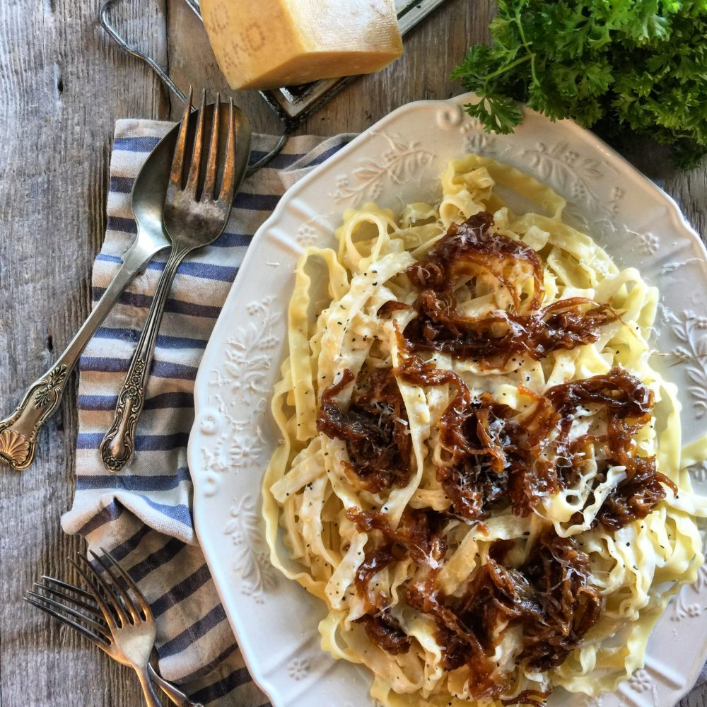

Pasta and Onions

Homemade Pasta with Sauteéd Onions and Garlic
Pasta and Onions, a delicious family recipe passed on from generations. The aroma of these two allium vegetables sizzling in olive oil will fill the air of your kitchen, leaving a sweet, mouth-watering smell. The flavors of this dish are incredible, and holds an immense amount of flavor to them. A simple dish, yet so easy to make.
Al dente pasta, the perfect consistency, paired with sweet, caramelized onions and garlic, topped with savory Parmesan, black pepper, and a dash of basil.
Ingredients
- 3 Tbsp. extra-virgin olive oil
- 1 lb. rotini pasta
- 2 lb. onions (about three large onions), chopped into small cubes
- 5 cloves of garlic, minced
- 1/4 cup Parmesan, finely grated
- Freshly ground black pepper
- First, Heat olive oil in a large pan. Add onions and garlic and cook, stirring occasionally, until very tender and deeply golden brown, about 30 minutes. (Stop before the onions become dry and shriveled.) Add 1 1/2 tsp. salt. Remove pan from heat.
- Meanwhile, cook pasta in a large pot of boiling salted water, stirring occasionally, until al dente.
- Combine pasta and onion mixture in a large bowl. Add Parmesan, basil, and a few pinchfuls of pepper.
- Finally, dish out the pasta into bowls, topping with more parmesan and basil (as preffered).